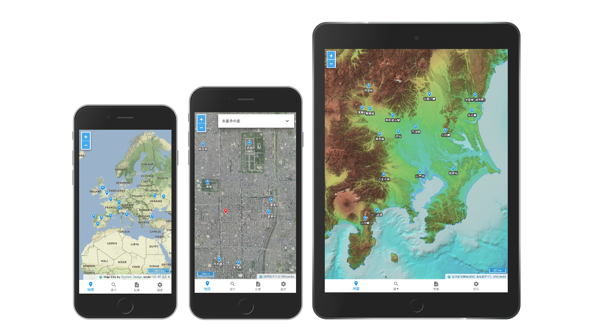
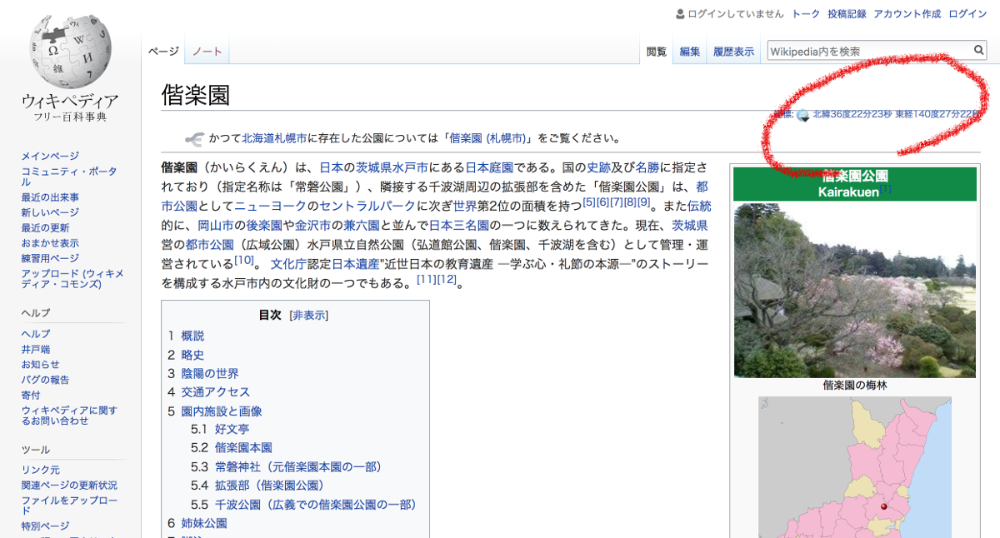

MediaWiki APIでWikipediaの記事から座標を取得する方法と、MediaWiki APIでWikipedia日本語記事の座標が取得できないことについての説明です。
WikiLayers
唐突ですが、React+Redux+Material-UI+OpenLayersでWikiLayersというWebアプリっぽいものを作りました。
これは今から紹介するMediaWiki APIでWikipediaの記事から座標を取得しOpenLayersで表示するという内容のアプリです。
MediaWiki APIで記事の座標を取得する実例として試してみてください。

WikiLayers
https://cieloazul310.github.io/wikilayers/
Wikipediaの記事の座標

Wikipediaにはタイトルの右側または本文などに座標が記載されている記事があります。 この座標は地図サービスへのリンク集GeoHackへのリンクになっていて、手軽にGoogleマップや地理院地図などで記事の座標を表示することができます。
この座標をMediaWiki APIで取得します。
MediaWiki APIの基礎
https://${lang}.wikipedia.org/w/api.php?
にクエリを加えていきます。
覚えておくべきクエリ
- origin=*: CORS対策です。
- action=query: ページの情報を取得するクエリです。
- format=${format}: 取得フォーマットをxml,json,phpから選択します。
- formatversion=2: データをJSONで取得したい場合は
formatversion=2をつけた方がいいです。 - prop=${prop1}|${prop2}|${prop3}…: 取得するデータの内容を選択。複数選択の場合は縦線
|で区切ります。 - redirects: タイトルが正確でない場合でもリダイレクトをする。
大雑把にしか説明していないのでクエリの詳細な説明を知りたい方がいたら以下のAPIヘルプやAPIサンドボックスを参照してください。
例
※注 リンク先は返り値を見やすくするためにformat=jsonfmにしてあります。
日本語版で水戸城の概要をプレーンテキストで取得
prop=extracts
指定されたページをプレーンテキストまたは制限付きhtmlで返すプロパティ。
https://ja.wikipedia.org/w/api.php?action=help&modules=query%2Bextracts
extractsのパラメータ
- &exintro: 記事の一章目より前の文章のみを返す。
- &explaintext: 制限付きhtmlではなくプレーンテキストで返す。
英語版でOtis Reddingのサムネイル画像URLを取得
prop=pageimages
サムネイルや写真の有無など、ページ上の画像に関する情報を返すプロパティ。
https://ja.wikipedia.org/w/api.php?action=help&modules=query%2Bpageimages
日本語版で水戸ホーリーホックの他国版のタイトルを取得
座標を取得する方法
MediaWiki APIの使い方をざっと覚えたら次は本題の座標の取得方法です。
なんのこっちゃない、上記の方法と同じようにprop=coordinatesで座標を取得できます。
- https://ja.wikipedia.org/w/api.php?action=help&modules=query%2Bcoordinates
- https://www.mediawiki.org/wiki/Extension:GeoData
例
日本語版で偕楽園の座標を取得
英語版でAbbey Road Studiosの概要と座標を取得
日本語版で東経140.528162北緯36.533588付近の座標を持つ記事を取得
日本語の記事だと座標が取得しにくい問題
さて、実はここからが本題です。
無事Wikipediaから座標が取得できました。めでたしめでたし、とは行かないようで、何故か日本語の記事では座標が紐付けられているにも関わらず座標を返してくれない事態が度々発生します。
例えば、「水戸城」を日本語と英語の両方で取得した場合、以下のような結果になります。
- 日本語版
- URL: https://ja.wikipedia.org/wiki/水戸城
- API: https://ja.wikipedia.org/w/api.php?&action=query&format=json&formatversion=2&prop=coordinates&titles=水戸城
- 結果: 座標なし
- 英語版
- URL: https://en.wikipedia.org/wiki/Mito_Castle
- API: https://en.wikipedia.org/w/api.php?&action=query&format=json&formatversion=2&prop=coordinates&titles=Mito%20Castle
- 結果: 座標あり!!!!!!
この差は一体どんな理由で生じるものなのか、疑問に思いWikipediaの記事のソースなどを調べてみたところ、記事に組み込まれた座標テンプレートの種類が違うことに気がつきました。
全世界で使われている汎用的な**Coordという座標テンプレートの他に、日本独自？のウィキ座標度分秒やウィキ座標2段度分秒という座標テンプレートが使われていた**のです。
MediaWiki APIで取得できるのは座標テンプレートがCoordのときのみなので、ウィキ座標が多く使われている日本語版の記事は座標の取得がしづらい状況にあります。
対策
1. 他国語版で取得する
第一の方法は、ウィキ座標という謎テンプレートが使用されていない他国語版で座標を取得することです。
WikiLayersでは、日本語版で座標の取得に失敗したら自動的に他言語版で座標を取得する仕組みにしています。
ただし座標が取得できるのは他国語版の記事があるものに限定されてしまいます。
2. Wikipediaを編集する 〜ウィキ座標を駆逐せよ！〜
第二の方法は、そもそもウィキ座標という謎のテンプレートを使っているのが悪いのだから、Wikipediaを編集してウィキ座標をCoordテンプレートに置き換えてしまおうというものです。
一つ一つの記事をしらみつぶしに編集していくのは大変ですが、幸い（？）なことにWikipediaの記事はテンプレート（React的な表現だとComponentsがしっくりくる）を多数組み込んだ構造をしています。
Wikipediaのテンプレートでは、あるテンプレートの中に別のテンプレートを組み込むことが可能です。例えば日本の城郭概要表というテンプレートの中には座標テンプレートが組み込まれています。このようにテンプレートの中に組み込まれている座標テンプレートが先述のウィキ座標である場合、そのテンプレートを使用している記事はMediaWiki APIから座標を取得することはできません。
逆に言うと、テンプレート内の座標テンプレートをウィキ座標からCoordに変更すれば、そのテンプレートを使用している記事はMediaWiki APIのprop=coordinatesで座標が取得できるようになります。
日本の城郭概要表というテンプレートは2018年2月5日現在、1446ページで使用されています。このテンプレートには緯度・経度の引数が設定されていて、記事側で数値を設定することによって記事タイトル右側に座標を表示することができます。
しかしここで使われている座標テンプレートはウィキ座標度分秒なので、日本の城郭概要表テンプレートを使用している1446ページはMediaWiki APIで座標を取得することができません。
（正確には、日本の城郭概要表テンプレート以外の部分でCoordテンプレートを使用している記事もあり、その座標は取得できます（「浜松城」など））
逆にこの日本の城郭概要表テンプレート一つをウィキ座標からCoordに変更するだけで、このテンプレートを使用している1446ページをMediaWiki APIで座標が取得可能なページに変更することができます。
とはいえ、ウィキ座標を駆逐せよ！とか書いてますが、日本独自のウィキ座標がどのような背景で導入されたものなのか、ウィキ座標を使うことにどのような利点があるのか、ウィキ座標をCoordに置き換えることによってどこにどのような影響があるのかわからないことには編集するのも気が引けるというのが現状です。
「ウィキ座標」系はどうしようもない駄テンプレートですね。廃止してもよいかもしれない。
–ラッキースター・キッド ◆Luck.w.AEQ 2010年8月25日 (水) 21:57 (UTC)
https://ja.wikipedia.org/wiki/%E3%83%97%E3%83%AD%E3%82%B8%E3%82%A7%E3%82%AF%E3%83%88%E2%80%90%E3%83%8E%E3%83%BC%E3%83%88:%E5%9C%B0%E7%90%86%E5%BA%A7%E6%A8%99
とプロジェクトノート:地理座標に8年前に書かれた意見を見つけましたが、特に進展なく？座標の付いている記事の半分ほどは未だにウィキ座標が使われています。
2018年2月5日時点での各座標テンプレートの使用数(使用箇所の多いテンプレートより)
- Template:Coord (66,588 ページで使用)
- Template:ウィキ座標2段度分秒 (34,598 ページで使用)
- Template:ウィキ座標度分秒 (21,907 ページで使用)
ウィキ座標を使っているテンプレートをCoordに置き換える作業をしたいところですが、初心者ウィキペディアンの自分がそういう大胆な編集をしてしまっていいのか悩ましいところです。（置き換えたい理由も、自分のアプリの使い勝手がよくなるというほとんど私利に近いものですし…）
以上、MediaWiki APIで座標を取得する方法および日本語記事では座標が取得できないものが多い、という話でした。
ウィキ座標という日本独自のテンプレートがどのような経緯で誕生したのか、知っている方がいたら是非教えてください。